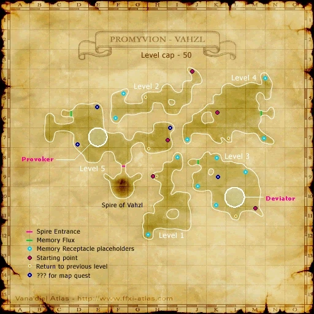

Before you begin
- Complete CoP 5-1.
- Three Memory Flux victories and their cutscenes before battlefield entry.
Starting point
Arrival in Vahzl · Promyvion - Vahzl
Era note: Historical reference cap: 50. Native battlefields use the server MAX_LEVEL instead. The referenced native battlefield permits Trusts; optional era modules or Zenith overrides can change entry rules. This is code review, not a completed Zenith battlefield test.
People in this mission

Walkthrough
- Climb through Memory Receptacles and working Memory Streams as in the first Promyvions. Vahzl has five floors.
- On floor three, inspect Memory Flux, defeat Propagator, and inspect the flux again for its scene.
- On floor four, repeat with Solicitor; on floor five, repeat with Ponderer. All three post-fight scenes are required.
- Enter Spire of Vahzl and choose Desires of Emptiness at the Web of Recollections. Defeat Procreator, Cumulator and Agonizer.
- The next boss activates as the current one becomes weak. Finish the injured target while controlling the newcomer; save healing and anima for that overlap.
- After victory, return to Cid at Metalworks H-8 to finish and begin Three Paths.
Battle and progress notes
- Historical Vahzl zone and battlefield cap is 50. The native battlefield uses MAX_LEVEL; zone overrides are a separate setting.
- The completed flux scenes provide return checkpoints from the Vahzl entrance.
Completion and reward
Story progression; the Light of Vahzl was received on arrival during 5-1.
What this opens
- CoP 5-3
Area maps
Open a zone below, then select a map to enlarge it. Match the named floors and grid coordinates in the steps; these are reference area maps, not a live position tracker.
Promyvion - Vahzl



Metalworks


Zone guides
References
Steps are an original summary of the linked walkthrough and reviewed source. Other servers’ bonus rewards are not included. How to read requirements, waits and battlefield notes.
Additional level-75 reference
|
Walkthrough
- Promyvion - Vahzl is five levels instead of four, and the mobs are stronger to match. Like the other Promyvions, it's only tough if you or your party is aggroing everything in sight. Be patient, wait until openings occur. It can be done.
- Promyvion - Vahzl is capped at level 50, so be sure to bring the appropriate gear.
- On levels three, four, and five, you will have to search for Memory Flux gates. They will spawn NMs; these are mandatory fights and required to proceed with the mission. The one on the third floor is a Propagator (Gorger type), on the fourth floor, a Solicitor (Craver type), and on the fifth floor, a Ponderer (Thinker type with AOE Sleep so bring poison pots). After you defeat each NM, check the Memory Flux a second time for a cutscene. Then heal up and search for the next Memory Receptacle.
- If you have a Paladin tank, make sure they don't eat defense food when you're getting close to Ponderer. If it absorbs a Tavnazian Taco and Protect it is almost impossible to hurt with melee attacks.
- Each time you get the cutscene, you’re given the option to warp to that Memory Flux from the gate in Pso'Xja. So, after you beat a Memory Flux, you can resume there later without starting over.
- If you don’t defeat all three Memory Flux NMs and get the cutscenes at those areas, you will not be able to cross to the Web of Recollections within the Spire of Vahzl.
- Enter the Web of Recollections and be prepared to face each of the earlier Promyvion bosses one at a time. From left to right, they are Procreator (Gorger type), Cumulator (Craver type), and Agonizer (Thinker type).
- You can choose which boss to fight first; the next boss in the sequence will then aggro when the previous is at about 20% HP.
- If you pull Cumulator first, Procreator attacks next, and then Agonizer.
- If you pull Agonizer first, Cumulator attacks next, and then Procreator.
- If you pull Procreator first, Agonizer attacks next, and then Cumulator.
- Strategy tips
-
- As with all Empty, their elements will be random. Make sure to note the bosses' elements so as not to cast spells that will be ineffective.
- The Procreator can usually be tanked for some time when it's HP is high without having to fear bad TP moves or an invasion of the Offspring.
- The next boss in the sequence will always aggro when the current boss is at 20% HP. Delay this mob with Terroanima and/or Bind/Shadowbind until you can finish off the weakened mob, which shouldn't take long. Also Rdm can kite with Stoneskin/Phalanx and Bind.
- If your party has a full set of anima, use one Psychoanima/Hysteroanima pair at about 50%, and a second at about 25% on each boss. If you only have one set per boss, use it at 25%.
- Watch out for Cumulator's Impalement early on. If it kills the tank, it's probably easier to leave the BC and try again.
- Any Offspring Procreator spawns will die when it dies, so just finish it off to get rid of the Offspring.
- Agonizer continues to be the strongest. Save resources (2-hours, MP, etc.) for finishing it quickly. Cast "dummy" buffs; use Poison Potions if you brought any.
- Blue Mage's Headbutt is very helpful, as it can prevent many melee and TP attacks by the bosses.
- The tank must not eat defense food until Agonizer is dead. If you have a Paladin tank, pulling Agonizer first allows them to use food for the other two bosses.
- With a setup including two or more BLM it is possible to win this fight without using anima or 2-hours (a good setup example is RDM, BLM x2, NIN x2 and WHM because this setup minimises the TP gain of the enemy). The strategy is to have the black mages both cast Freeze at 19-22% to kill the boss you are fighting, and have one NIN temporarily tank or a RDM Gravity kite the next one for a few seconds if necessary. It is better to use Freeze a little bit too late than too early, as the ideal is to make sure the boss you are fighting dies from the spells, then have the black mages heal to full in a safe corner and repeat the same thing on the next. Naturally if you have more than two BLM it is probably safe to start casting around 25%.
- Also a setup of WHM, RDM, SAM (tank), and 3 DDs can be used throughout all the fights. Have everyone bring full sets of anima, and do not use any until you fight in the BCNM. Just be sure the mages stay back away to avoid the AoE, and all DDs to bring poison potions.
- You will receive 1500 experience for winning the fight.
- (OPTIONAL) When the Spire battle is cleared, head out to Beaucedine Glacier and talk to the three Tarutaru in the tower at (I-7). There will not be a cutscene from the three Tarutarus, nor will the mission log change.
Game Description
- Mission Orders
- The Emptiness has trapped you and your companions. You must find them before you are able to continue your journey into the depths of Promyvion.
References
Video
See Video.
Adapted from Eden Wiki: Desires of Emptiness · Contributors and history · CC BY-SA 4.0. Revision 45085. Layout, links and optional background text adapted for Zenith.